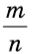
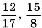
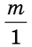

Оглавление
- Обыкновенные дроби. Правильные и неправильные дроби. Смешанные числа.
- Равенство дробей. Основное свойство дроби. Сокращение дробей.
- Приведение дробей к общему знаменателю.
- Арифметические действия над обыкновенными дробями.
- Десятичные дроби.
- Арифметические действия над десятичными дробями.
- Проценты
- Обращение обыкновенной дроби в бесконечную периодическую дробь.
- Обращение бесконечной десятичной периодической дроби в обыкновенную дробь.
- Координатная прямая
- Множество рациональных чисел.
Обыкновенные дроби. Правильные и неправильные дроби. Смешанные числа.
Обыкновенная дробь- это число вида , где m и n- натуральные числа, например . Число m называют числителем дроби, n- знаменателем. В частности, может быть n=1, в этом млучае дробь имеет вид , но чаще пишут просто m. Это означает, что всякое натуральное число можно представить в виде обыкновенной дроби со знаменателем 1. Запись - другой вариант записи m : n.
Среди обыкновенных дробей различают правильные и неправильные. Дробь называется правильной, если её числитель меньше знаменателя, и неправильной, если её числитель больше знаменателя или равен ему.